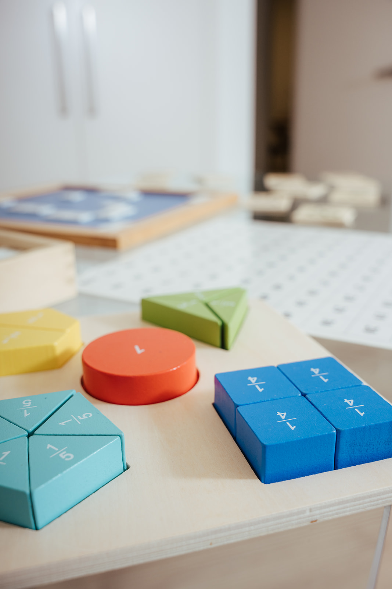
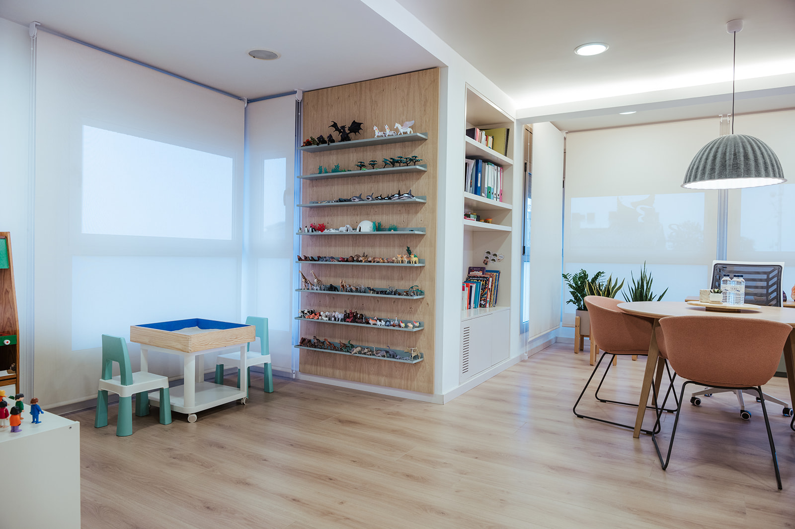
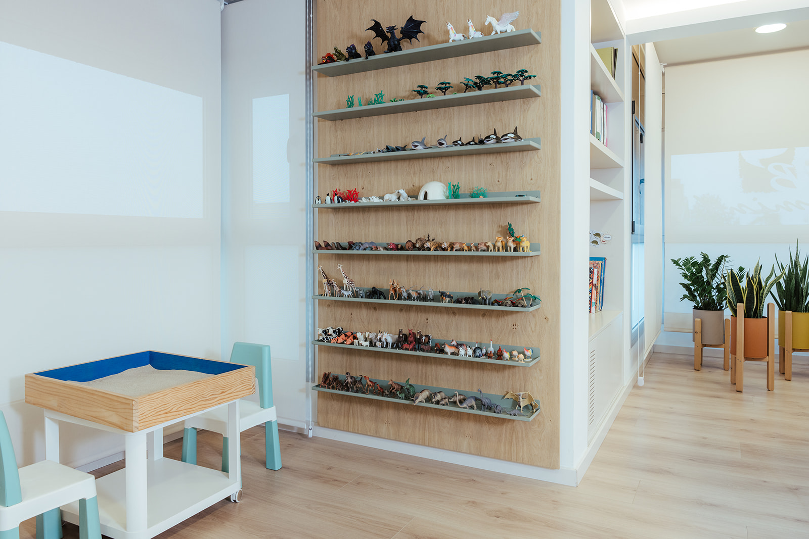

“Suport pedagògic per créixer, aprendre i avançar”
Al nostre centre oferim un servei d’acompanyament pedagògic personalitzat, adaptat a les necessitats de cada infant i adolescent. El nostre objectiu és potenciar les seves capacitats, afavorir l’autonomia en l’aprenentatge i proporcionar les eines necessàries per assolir un desenvolupament acadèmic i personal satisfactori.

El nostre objectiu no només és millorar notes, sinó la manera com es veuen a si mateixos. L’èxit acadèmic comença en la confiança personal.
Acompanyem els alumnes d’ESO en el seu procés d’aprenentatge, ajudant-los adquirir hàbits d’estudi eficaços, tècniques d’organització i estratègies per millorar el rendiment acadèmic.
Treballem aspectes com:
L’acompanyament es realitza en petits grups, respectant el ritme i les característiques de cada alumne.

ACOMPANYEM PERSONES, NO NOMÉS DIFICULTATS.
“Perquè aprendre no hauria d’anar lligat a l’angoixa ni a la inseguretat”.
Les reeducacions pedagògiques estan dirigides a infants i adolescents que presenten dificultats en els processos d’aprenentatge o necessiten un suport específic per desenvolupar les seves competències acadèmiques.
Intervenim en casos de:
A través d’una intervenció individual o grupal treballem les habilitats cognitives i acadèmiques necessàries per afavorir un aprenentatge més eficient i funcional. Utilitzem metodologies adaptades a cada cas, potenciant els punts forts de l’infant i adolescent i proporcionant estratègies pràctiques que puguin aplicar tant a l’escola com en el seu dia a dia.
Entenem la intervenció pedagògica com un treball compartit entre l’alumne, la família, l’escola i els professionals que l’acompanyen. Per aquest motiu, fomentem la coordinació entre tots els agents implicats per garantir una intervenció coherent i ajustada a les necessitats de cada persona.
El nostre objectiu és ajudar cada alumne a desenvolupar el seu potencial, guanyar seguretat en les seves capacitats i viure l’aprenentatge amb més confiança i benestar.